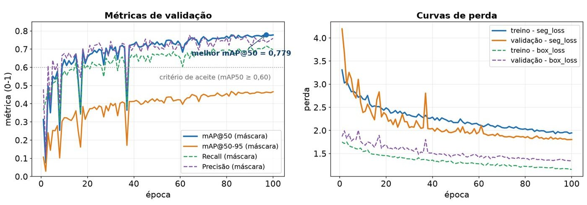

InícioProjetos de destaqueGFX GEO
Detecção de edificações em ortofoto de drone com YOLO11
Uma rede neural que encontra cada edificação na ortofoto de drone e recalcula a área construída lote a lote, com dados de Lagoa Grande (MG).
0,78mAP50 de máscara em validação espacial; o critério de aceite era 0,60
Contexto
Cadastro urbano desatualizado atrapalha a arrecadação e o planejamento de saúde pública. O aerolevantamento já existia; faltava transformar a imagem em inventário.
O que fiz
- Montei o conjunto de treino a partir da classificação corrigida, filtrada pela classe de edificação do LiDAR e pela altura, separando casas geminadas.
- Ajustei um YOLO11 de segmentação com validação espacial, para o modelo não ser testado nos mesmos quarteirões em que treinou.
- Gerei o inventário de ativos urbanos (edificações, piscinas, árvores, lotes e terrenos baldios) com identificador estável entre voos.
- Automatizei a planilha de recálculo da área construída por lote.
Como funciona, em quatro etapas
Dados
- Ortofoto de drone (6,5 cm)
- LiDAR classificado
Rótulos
- Classe building + nDSM
- Watershed para geminadas
Modelo
- YOLO11-seg
- Validação espacial
Produto
- Inventário urbano
- Área construída por lote
Método
- Rótulos fracos auditados antes do treino: o método clássico foi descartado depois que a inspeção mostrou polígonos em solo exposto.
- Critério de aceite declarado antes do treino (mAP50 de 0,60 e recall de 0,65).
Resultado
- Máscara com mAP50 de 0,78, precisão de 0,77 e recall de 0,69 na validação espacial.
Figuras

